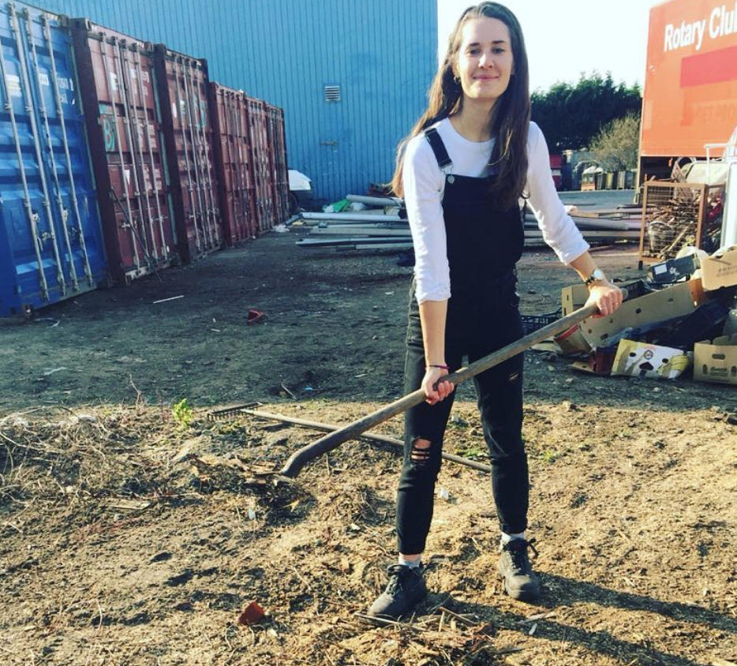
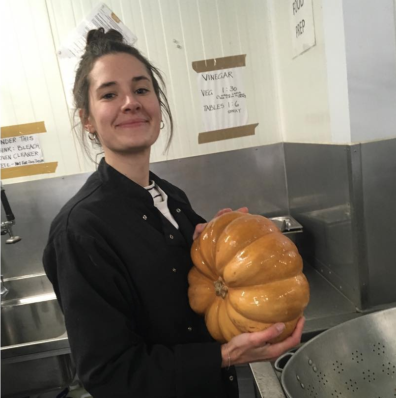
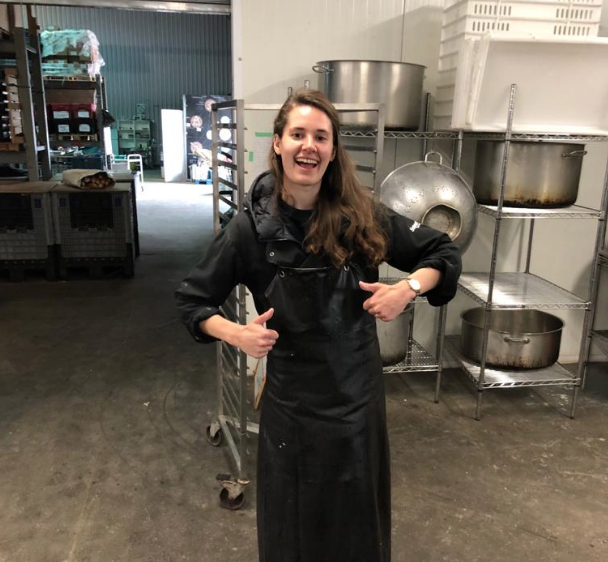
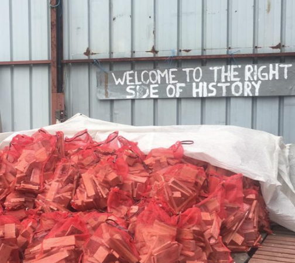

Volunteering




Career Ready – Mentor
2019 - Present
- I am an active member of Career Ready, a social enterprise who provide free careers masterclasses and workshops to schools.
- This role involves delivering careers masterclasses to students from Year 7 through to Year 11.
- - This role reminds me about my passion for teaching, the joy of working with young people, and allows me to maintain my core teaching and behavior management skills whilst working as a consultant.
Care4Calais/HelpRefugees
2019
- On two separate occasions I travelled to Calais in France, outside of term-time whilst teaching, to volunteer with two humanitarian charities supporting refugees living in Calais. I gained experience working with people from a wide range of backgrounds, and developed communication skills and empathy.
- I was able to share my insights with my students on return, helping to educate them about the global migration crisis.
UCL Refugee Summer School
2019
- Volunteered as a Teaching Assistant at a summer school for students with asylum seeker status at UCL.
- Supported with teaching of English language and computing lessons.